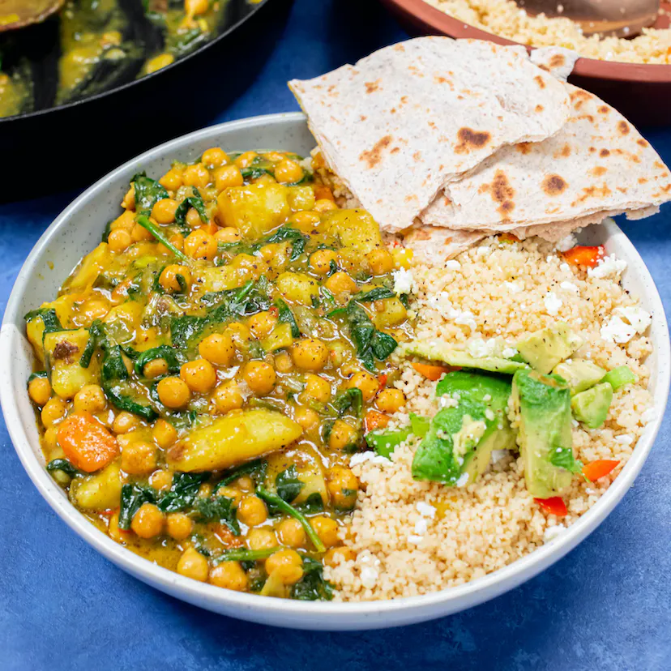

Homepage
Chickpea Curry

Description
Sam Wise & Damnshaq knocking it out the park with their creamy coconut spiced chickpea curry.
Tuck in with a toasted roti. Bob is your uncle.
Ingredients
- 800ml Coconut Milk
- 800g Chickpeas in Water
- 400g Couscous
- 100g Spinach
- 50g Feta Cheese
- 6 Spring Onions
Steps
- Prepare your vegetables. Finely chop your spring onions, brown onions, garlic and scotch bonnet.
- Heat a glug of sunflower oil in a pan and add the chopped veg (saving 1/3 of the spring onions for the couscous). Once the onions have softened, add in the seeds and both the hot and mild curry powder. Fry for a couple of minutes.
- Peel and chop your potatoes and carrots into small chunks and add them into the pan.
More recipes